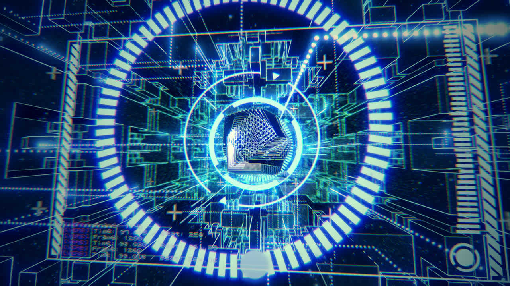

Until
by FMS_Cat — a 64KB WebGL intro.
2nd place at Tokyo Demo Fest 2018, combined demo compo.
Builds on Automaton, the author's own animation engine.

Production build
A single 64K HTML file, available at several resolutions.
- 640×360Lightweight
- 1280×720Recommended
- 1920×1080Full HD
- 2560×1440Requires a strong GPU
- 3840×21604K
- 4096×2160DCI 4K
- 7680×43208K — expect heavy load
Tip: the high resolutions can hang weaker GPUs. Start at 1280×720 and work upwards.